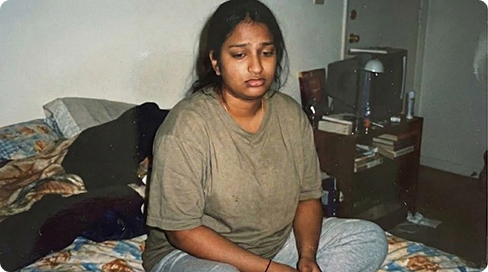
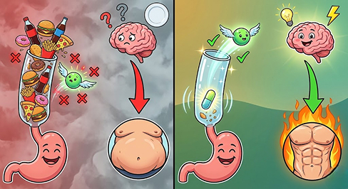
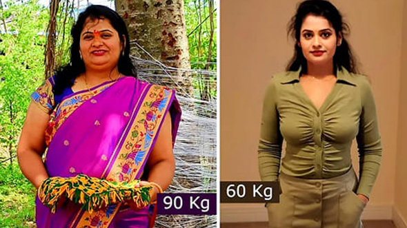
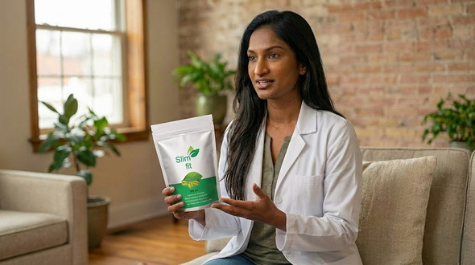
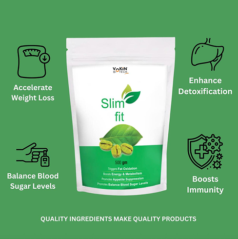
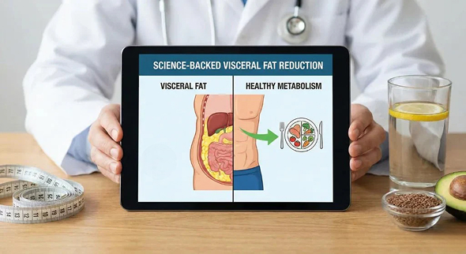
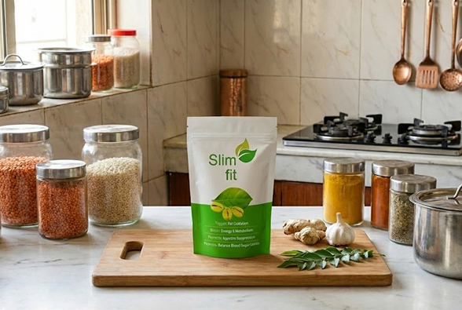

<section class="info__section">
  <div class="container">
    <div class="info__wrapper wrapper">
      <a href="#order" class="info__breadcramps mb-44">
        <span>घर</span>
        
        <span>स्वास्थ्य</span>
        
        <span>अध्ययन</span>
      </a>
      <h1 class="main__title text-center mb-70">
        चिकित्सा जगत में सनसनीखेज घोटाला: दिल्ली की एक जानी-मानी पोषण विशेषज्ञ ने सच उजागर करके अपना लाइसेंस खतरे में
        डाल दिया! "फार्मेसी कंपनियां आपको मोटा रखकर मुनाफा कमा रही हैं। वजन घटाने का असली उत्पाद बहुत सस्ता होता है,
        लेकिन वे इसे छुपा रहे हैं।"
      </h1>
      <div class="flex mb-50">
        
        <div>
          <p class="date"></p>
          <p class="info__small">लेखक: जांच विभाग</p>
          <p class="info__small mb-12">2.4 मिलियन</p>
          <p class="text-medium weight-bold">
            "बाईं ओर की तस्वीर एक साल पहले की है, जब मेरा वजन 92 किलो था, मैं भारी और लगातार थका हुआ महसूस करता था। दाईं
            ओर की तस्वीर आज की है, जब मैंने अपने शरीर को कैलोरी को सही ढंग से पचाना सिखा दिया है, तब मेरा वजन 58 किलो
            है।"
          </p>
        </div>
      </div>
      <p class="text text-center mb-20">
        प्रमुख एंडोक्रिनोलॉजिस्ट और आयुष परिषद की पूर्व सदस्य डॉ. <br />
        <span class="weight-bold">अदिति शर्मा ने एक चौंकाने वाला बयान दिया है:</span>
      </p>
      <div class="bg mb-20">
        <p class="text text-center weight-semibold text-blue">
          भारत में मोटापा मानव निर्मित महामारी है! हमें ऐसे रसायन खिलाए जाते हैं जो हमारी सेहत को बाधित करते
          हैं।लेप्टिन(तृप्ति हार्मोन) का उपयोग करते हैं, और फिर वे महंगे जिम की सदस्यता और खतरनाक गोलियां बेचते हैं। मैं
          आधिकारिक तौर पर कह रहा हूँ: वजन कम करने के लिए आपको खुद को भूखा रखने की जरूरत नहीं है। आपको बस अपने चयापचय को
          "सक्रिय" करने की जरूरत है
        </p>
      </div>
      <p class="text-small text-center weight-bold mb-50">
        प्रमुख दवा कंपनियों ने इस साक्षात्कार को हटाने की कोशिश की है। जब तक यह उपलब्ध है, इसे पढ़ लें!
      </p>
      <div class="flex flex-reverse mb-20">
        
        <div>
          <p class="text-medium weight-bold mb-20">"मैं अपने मरीजों को धोखा खाते हुए देखकर थक गया हूँ।"</p>
          <p class="text mb-20">
            <span class="weight-bold">रिपोर्टर:</span> डॉ. अदिति, आप एक अनुभवी एंडोक्रिनोलॉजिस्ट हैं। लोगों को यकीन नहीं
            होगा कि आपको कभी वजन संबंधी समस्याएँ भी रही होंगी।
          </p>
          <p class="text">
            <span class="weight-bold">डॉ. अदिति शर्मा:</span> (हंसते हुए, एक पुरानी तस्वीर निकालते हुए)देखिए। ये मैं
            हूँ, 40 साल की उम्र में घर पर। मेरा वज़न 92 किलो था। मुझे टाइप 2 मधुमेह था। मेरी साँस इतनी फूलती थी कि मैं
            अस्पताल की दूसरी मंज़िल तक बिना रुके चढ़ भी नहीं
          </p>
        </div>
      </div>
      <p class="text mb-50">
        पाता था। मुझे सारी चिकित्सा पद्धतियाँ पता थीं। मैं मरीज़ों को आहार संबंधी सलाह देता था। लेकिन 12 घंटे की ड्यूटी
        के बाद घर आने पर मुझमें जिम जाने की हिम्मत नहीं बचती थी। मैं झटपट पकने वाला खाना खाता था—चावल, चपाती।
      </p>
      <div class="flex">
        <div>
          
          <p class="text-small text-center text-italic">(डॉ. अदिति, ठीक एक साल पहले)</p>
        </div>
        <div>
          <p class="text mb-20">
            डॉक्टर भी इंसान ही होते हैं। सरकारी क्लीनिकों में हमारी भी कम तनख्वाह होती है, घर का कर्ज़ होता है और तनाव
            भी होता है। मैं निजी ट्रेनर रखने या बेहद महंगे "जैविक उत्पादों" का खर्च नहीं उठा सकती।
          </p>
          <p class="text mb-50">
            <span class="weight-bold">रिपोर्टर:</span> वह कौन सा मोड़ था जो वापसी का असंभव बिंदु बन गया?
          </p>
          <p class="text">
            <span class="weight-bold">डॉ. अदिति शर्मा:</span> मेरी बेटी का जन्मदिन था। हम पार्क गए। वह पतंग के पीछे भागी
            और चिल्लाई:"माँ, जल्दी करो!"मैं 10 मीटर दौड़ी... और मेरी आँखों के सामने सब कुछ अंधेरा हो गया। मेरा दिल इतनी
            ज़ोर से धड़क रहा था कि मुझे लगा जैसे सब कुछ खत्म हो गया। मेरी बेटी वहीं खड़ी थी और डरी हुई आँखों से मुझे देख
            रही थी।"माँ, आप दूसरी माताओं की तरह मेरे
          </p>
        </div>
      </div>
      <p class="text mb-50">
        साथ क्यों नहीं दौड़ सकतीं? क्या आप बीमार हैं?"मुझे एहसास हुआ: मैं लोगों को ठीक कर रही थी, लेकिन मैं खुद अधिक वजन
        के कारण मर रही थी। उस दिन मैंने कसम खाई: मैं अपने बच्चे को एक स्वस्थ माँ से वंचित नहीं होने दूंगी।
      </p>
      <div class="flex flex-reverse mb-50">
        
        <div>
          <p class="text mb-20"><span class="weight-bold">रिपोर्टर:</span> और फिर आपने आगे क्या किया?</p>
          <p class="text mb-20">
            <span class="weight-bold">डॉ. अदिति शर्मा:</span> मैंने दवाखानों की सलाह सुनना बंद कर दिया और गहराई से
            छानबीन शुरू कर दी। मैंने आयुष संस्थान के पुराने आयुर्वेदिक अभिलेखागारों की छानबीन की, जिन पर "व्यावसायिक रूप
            से व्यवहार्य नहीं" लिखा हुआ था। वहाँ मुझे 1990 के दशक के अध्ययन
            <span class="weight-bold">मिले।लेप्टिन प्रतिरोध.</span>
          </p>
          <p class="text mb-20"><span class="weight-bold">रिपोर्टर:</span> सरल शब्दों में इसका क्या अर्थ है?</p>
          <p class="text mb-20">
            <span class="weight-bold">डॉ. अदिति शर्मा:</span> कल्पना कीजिए कि आपका पेट आपके दिमाग को एक एसएमएस भेज रहा
            है:"मेरा पेट भर गया है, खाना बंद करो, चर्बी कम करो!"लेकिन आधुनिक भोजन में मौजूद विषाक्त पदार्थों और चीनी के
            कारण मस्तिष्क <span class="wight-bold">प्राप्त नहीं होता</span> यह एक एसएमएस है। नेटवर्क में कोई सिग्नल नहीं
            है। आप खाना खाते हैं, लेकिन आपका दिमाग सोचता है कि आप भूखे मर रहे हैं और घबराहट में आपके पेट और कूल्हों में
            हर ग्राम चर्बी जमा कर लेता है। डाइटिंग काम नहीं करती क्योंकि आप अपने ही दिमाग से लड़ रहे हैं!
          </p>
          <p class="text">
            मुझे एहसास हुआ: मुझे खुद को भूखा रखने की जरूरत नहीं है, मुझे "संबंध को ठीक करने" की जरूरत है। मुझे लेप्टिन
            रिसेप्टर्स को साफ करने वाले अर्क की एक सूची मिली:
            <span class="weight-bold">गार्सिनिया, ग्रीन कॉफी और गुग्गुल राल का सांद्र मिश्रण.</span>
          </p>
        </div>
      </div>
      <div class="flex mb-20">
        <div>
          
        </div>
        <div>
          <p class="text mb-20">
            <span class="weight-bold">रिपोर्टर:</span> और आपने इस फॉर्मूले का इस्तेमाल तुरंत शुरू कर दिया?
          </p>
          <p class="text mb-20">
            <span class="weight-bold">डॉ. अदिति शर्मा:</span> मैंने कोशिश की! मैं इन दस्तावेजों के साथ अस्पताल के मुख्य
            चिकित्सक के पास गया। मैंने कहा:"देखो! हम हजारों लोगों में मधुमेह और मोटापे का इलाज सस्ते और प्राकृतिक तरीके
            से कर सकते हैं!".
          </p>
          <p class="text">
            क्या आपको पता है उसने मुझे क्या जवाब दिया?"अदिति, अगर हम उनका मोटापा ठीक कर दें, तो पैसे देकर इलाज करवाने के
            लिए हमारे पास कौन आएगा? फोल्डर वापस रख दो और मरीजों को वही गोलियां लिख दो जो प्रायोजकों ने हमें भेजी हैं।".
          </p>
        </div>
      </div>
      <p class="text mb-50">
        उस दिन मुझे एहसास हुआ:यह व्यवस्था हमारे खिलाफ है।अगर मुझे खुद को और अपने परिवार को बचाना है, तो मुझे खुद ही कदम
        उठाना होगा।
      </p>
      <div class="bg mb-50">
        <p class="text text-center weight-semibold text-blue">वह प्रयोग जिसने मेरे परिवार की जान बचाई</p>
      </div>
      <p class="text">
        मैं अस्पताल के ज़रिए सामग्री नहीं मंगवा सकती थी। मैंने एक निजी व्यक्ति के तौर पर सीधे किसानों से सामग्री मंगवाई।
        बच्चों के सो जाने के बाद मैंने रात में अपनी रसोई में सामग्री को सही अनुपात में मिलाया। मुझे एक पागल प्रोफेसर
        जैसा महसूस हो रहा था, लेकिन मेरे पास खोने के लिए कुछ नहीं था।
        <span class="weight-bold">मैं डरा हुआ था।</span> हाँ, मुझे डर लग रहा था। क्या होगा अगर यह काम न करे? क्या होगा
        अगर हालत और बिगड़ जाए? लेकिन जब मैंने आईने में अपना सूजा हुआ चेहरा देखा, तो मुझे पता चल गया कि इससे बुरा कुछ
        नहीं हो सकता। <br />
        मैं पहला मरीज था। परिणाम चौंकाने वाले थे:
      </p>
      <ul class="text mb-50">
        <li>
          <span class="weight-bold">7 दिन:</span> मुझे मीठा खाने की तीव्र इच्छा नहीं रही। मैं आधा चावल खाकर ही तृप्त हो
          जाती थी। सूजन भी गायब हो गई। मैंने सोचा, शायद यह महज़ एक संयोग है?
        </li>
        <li>
          <span class="weight-bold">दिन 21:</span> मैंने पांच साल से न फिट होने वाली पुरानी पैंट पहनी। ज़िप आसानी से बंद
          हो गई! मुझमें ज़बरदस्त ऊर्जा भर गई और सांस फूलना भी बंद हो गया।
        </li>
        <li>
          <span class="weight-bold">60 दिन:</span> तराजू ने दिखाया
          <span class="weight-bold">58 किलोग्राममैंने</span> मैराथन दौड़े बिना या घर का बना खाना छोड़े बिना 34 किलो वजन
          कम किया। और मेरा ब्लड शुगर लेवल भी सामान्य हो गया।
        </li>
      </ul>
      <p class="text mb-50">
        <span class="weight-bold">मुख्य परीक्षा: मेरी माँ</span> <br />
        उस समय मेरी मां (उनकी उम्र 68 वर्ष है) की सेहत में स्पष्ट रूप से गिरावट आ रही थी। उनके अधिक वजन के कारण उनके
        घुटने खराब हो रहे थे। डॉक्टरों ने कहा:"केवल जोड़ बदलने की सर्जरी। 5 लाख रुपये तैयार रखें।". <br />
        हमारे पास उतने पैसे नहीं थे। माँ रात को दर्द और अपनी बेबसी के मारे रोती रहती थी। मैं डॉक्टर हूँ, लेकिन मैं अपनी
        माँ की मदद नहीं कर सका! <br />
        और फिर मैंने मन बना लिया। मैं उसके लिए अपनी कैप्सूल की बोतल ले आई।"माँ, बस इसे पी लो। कृपया मुझ पर भरोसा करो।".
        <br />
        इसके बाद जो हुआ, उसे मैं चमत्कार मानता हूँ, हालाँकि यह विशुद्ध रूप से विज्ञान पर आधारित है। एक सप्ताह बाद, मेरी
        माँ ने मुझे फोन किया:"अदिति, मैं कल रात पूरी रात सोई। अब मेरे घुटनों में उतना दर्द नहीं हो रहा है।"और 40 दिन बाद
        उसने मुझे एक वीडियो भेजा।
        <span class="weight-bold"
          >मेरी मां, जो एक महीने पहले तक मुश्किल से चल पाती थीं, पहाड़ी पर स्थित मंदिर तक पैदल चलकर गईं!</span
        >
        <br />
        उसका 30 किलो वजन कम हो गया। उसके जोड़ों पर पड़ने वाला तनाव खत्म हो गया। उसका शरीर अपने आप ठीक हो गया। हमने
        सर्जरी रद्द कर <span class="weight-bold">दी।हमने उसे बचा लिया।</span>
      </p>
      <div class="flex mb-50">
        <div>
          
          <p class="text-small text-center text-italic">(डॉ. अदिति की मां द्वारा ली गई तस्वीर)</p>
        </div>
        <p class="text">
          उसी क्षण, अपनी प्रसन्न माँ को देखते हुए, मुझे एहसास हुआ: मुझे इसे छिपाने का कोई अधिकार नहीं है। मोक्ष का रहस्य
          जानकर चुप रहना एक अपराध होगा। <br />
          मैंने अस्पताल की नौकरी छोड़ दी। मैंने ईमानदार फार्मासिस्टों की एक टीम बनाई और हमने अपने "किचन" फॉर्मूले को
          बेहतर बनाया। हमने इसे नाम दिया। <span class="weight-bold">स्लिम फिट</span> क्योंकि यह शरीर की प्राकृतिक
          सुडौलपन (फिटनेस) और स्वास्थ्य को बहाल करता है। <span class="weight-bold red">अब ऑर्डर दें</span> <br />
          <br />

          हमने यह संकल्प लिया: हम इसे उन फार्मेसी चेन के माध्यम से नहीं बेचेंगे जो इसकी कीमत में 300% की बढ़ोतरी करती
          हैं। हम इसे सीधे लोगों को देंगे।
        </p>
      </div>
      <div class="flex flex-reverse mb-50">
        
        <div>
          <p class="text mb-20">
            <span class="weight-bold">रिपोर्टर:</span> डॉ. अदिति, स्लिम फिट वास्तव में कैसे काम करता है? जब अन्य दवाएँ
            विफल रहीं, तो इसने आपको और आपकी माँ को कैसे मदद की?
          </p>
          <p class="text mb-20">
            <span class="weight-bold">डॉ. अदिति शर्मा:</span> (मुस्कुराते हुए) यह कोई चमत्कार नहीं, विज्ञान है! यह एक
            काफी पुरानी खोज है जिसे उस मंत्रालय में दबा दिया गया था जहाँ मैं काम करता था। जैसा कि मैंने पहले ही कहा,
            प्राकृतिक तत्वों का यह संयोजन दूर करने में मदद करता है।
            <span class="weight-bold">लेप्टिन प्रतिरोध</span> ।आपका दिमाग सोचता है: "हे भगवान, हम तो भूखे मर रहे हैं!
            बुरे समय के लिए कुछ चर्बी बचा कर रख लो!"
          </p>
          <p class="text">
            और आप चावल की एक और सर्विंग खाते हैं, और आपकी कमर के किनारों पर चर्बी जमा हो जाती है, भले ही आप खाना न
            चाहें। इसे कहते हैं <span class="weight-bold">लेप्टिन प्रतिरोध.</span>
          </p>
        </div>
      </div>
      <p class="text mb-20">
        <span class="weight-bold">स्लिम फिट क्या करता है?</span> <br />
        यह एक मरम्मत दल की तरह काम करता है। सक्रिय तत्व (विशेष रूप से गुग्गुल और गार्सिनिया) इन टेलीफोन लाइनों को "साफ़"
        करते हैं।
      </p>
      <ol class="text mb-20 pl-50">
        <li>आप कैप्सूल लें।</li>
        <li>कनेक्शन बहाल किया जा रहा है।</li>
        <li>अंततः मस्तिष्क को संदेश मिलता है: "वाह, हमारे पास बहुत सारी अतिरिक्त ऊर्जा है!"</li>
        <li>और वह आदेश देता है: <span class="weight-bold">"जलाना!"</span>.</li>
      </ol>
      <p class="text mb-50">
        शरीर ऊर्जा के लिए लकड़ी के चूल्हे की तरह वसा भंडार को जलाना शुरू कर देता है। बैठने पर, काम करने पर और यहां तक
        ​​कि सोते समय भी आपका वजन कम होता है। क्योंकि अब आपका शरीर काम कर रहा है। <span class="weight-bold">सही.</span>
      </p>
      <div class="flex mb-50">
        <div>
          
          <p class="text weight-bold red text-center">अब ऑर्डर दें</p>
        </div>
        <div>
          <p class="text-medium mb-20 weight-bold">सबूत: "जन प्रयोग" बनाम व्यवस्था</p>
          <p class="text mb-20">
            <span class="weight-bold">रिपोर्टर:</span> यह तर्कसंगत लगता है। लेकिन क्या इसके कोई आधिकारिक आंकड़े हैं?
          </p>
          <p class="text">
            <span class="weight-bold">डॉ. अदिति शर्मा:</span> जब प्रमुख प्रयोगशालाओं ने हमें वित्त पोषण देने से इनकार कर
            दिया, तो हमने नई दिल्ली में अपना स्वतंत्र अध्ययन किया। हमने इसे "जनता का परीक्षण" नाम दिया।
          </p>
        </div>
      </div>
      <p class="text mb-30">
        हमने 1,000 आम लोगों को लिया और उन्हें दो समूहों में विभाजित किया। <br />
        30 दिनों के बाद शोध द्वारा पुष्टि किए गए परिणाम इस प्रकार हैं:
      </p>
      <table class="mb-50">
        <tbody>
          <tr>
            <td class="weight-bold text-small td-first">पैरामीटर</td>
            <td class="weight-bold text-small">समूह 1 (मानक आहार + खेलकूद)</td>
            <td class="weight-bold text-small">समूह 2 (नियमित भोजन + स्लिम फिट)</td>
          </tr>
          <tr>
            <td class="weight-bold text-small td-first">वो क्या करते थे?</td>
            <td class="text-small">वे भूख से तड़पते थे और सुबह-सुबह दौड़ते थे।</td>
            <td class="text-small">सामान्य जीवन जिया, कैप्सूल लिया</td>
          </tr>
          <tr>
            <td class="weight-bold text-small td-first">वजन घटाना</td>
            <td class="text-small"><span class="weight-bold">-2.5 किलोग्राम</span> (वजन जल्दी वापस आ गया)</td>
            <td class="text-small">
              <span class="weight-bold">-11.4 किलोग्राम</span> (पेट और कूल्हों से चर्बी गायब हो गई)
            </td>
          </tr>
          <tr>
            <td class="weight-bold text-small td-first">आत्मसम्मान</td>
            <td class="text-small">क्रोध, थकान, चक्कर आना</td>
            <td class="text-small">ऊर्जा, हल्कापन, अच्छी नींद</td>
          </tr>
          <tr>
            <td class="weight-bold text-small td-first">मीठे का शौकीन</td>
            <td class="text-small">स्वयं से निरंतर संघर्ष</td>
            <td class="text-small"><span class="weight-bold">गायब हुआतीसरे</span> दिन पूरी तरह से</td>
          </tr>
          <tr>
            <td class="weight-bold text-small td-first">शरीर की दशा</td>
            <td class="text-small">त्वचा ढीली पड़ जाती है, मांसपेशियां कमजोर हो जाती हैं।</td>
            <td class="text-small">पेट कस गया, त्वचा लचीली हो गई</td>
          </tr>
          <tr>
            <td class="weight-bold text-small td-first">इस मुद्दे की कीमत</td>
            <td class="text-small">लगभग 15,000 रुपये (भोजन, हॉल)</td>
            <td class="weight-bold text-small">किसी रेस्टोरेंट में एक बार के खाने से भी सस्ता।</td>
          </tr>
        </tbody>
      </table>
      <div class="flex flex-stretch flex-reverse mb-50">
        <div>
          
        </div>
        <div class="flex-bg">
          <p class="text">
            <span class="weight-bold">स्वतंत्र वैज्ञानिकों का निष्कर्ष:</span> स्लिम फिट आपके मेटाबॉलिज्म को 5 गुना बढ़ा
            देता है, जिससे आपके शरीर की प्राकृतिक रूप से वसा जलाने की क्षमता बहाल हो जाती है। यह तब भी काम करता है जब आप
            चावल और चपाती खा रहे हों।
          </p>
        </div>
      </div>
      <p class="text mb-20">
        <span class="weight-bold">रिपोर्टर:</span> आंकड़े तो प्रभावशाली हैं। लेकिन लोग खुद क्या कहते हैं?
      </p>
      <p class="text mb-50">
        <span class="weight-bold">डॉ. अदिति शर्मा:</span> (पत्रों वाला एक फोल्डर निकालते हुए) मुझे हर दिन सैकड़ों पत्र
        मिलते हैं। मैं आपको उनमें से कुछ पढ़कर सुनाना चाहता हूँ। ये कवर पर छपे "सितारे" नहीं हैं। ये असली हीरो हैं।
      </p>
      <div class="flex">
        <div>
          
        </div>
        <div>
          <p class="text weight-bold mb-20">(पत्र 1)</p>
          <p class="text weight-semibold mb-20">विक्रम, 45 वर्ष, लेखाकार, दो बच्चों के पिता (16 किलो वजन घटाया):</p>
          <p class="text">
            प्रिय डॉक्टर अदिति! मैं रोते हुए आपको पत्र लिख रहा हूँ। मेरी नौकरी ऐसी है जिसमें मुझे ज़्यादा हिलना-डुलना
            नहीं पड़ता, और चालीस साल की उम्र तक आते-आते मैं बूढ़ा हो गया हूँ। मेरा पेट इतना बढ़ गया था कि मैं अपने जूतों
            के फीते भी नहीं बाँध पाता था। मेरी पत्नी रात को मेरी साँसें सुनती थी—उसे डर लगता था कि कहीं मेरा दिल धड़कना
            बंद न कर दे। मेरे पास महंगे जिम जाने के लिए पैसे नहीं हैं; मुझे अपने परिवार का पेट पालना है। मैंने अपनी
            आखिरी कमाई से स्लिम फिट खरीदा, सिर्फ इसलिए क्योंकि मुझे आप पर भरोसा था। एक महीना बीत गया है। मैंने अपनी
            बेल्ट बदलकर चार छेद वाली बेल्ट लगा ली है!
          </p>
        </div>
      </div>
      <p class="text mb-50">
        कल, मैं और मेरा बेटा फुटबॉल खेल रहे थे, और मैं एक घंटे तक बिना थके दौड़ता रहा! मेरे सहकर्मी पूछते हैं, "क्या
        आपको प्यार हो गया है?" और मैं कहता हूँ, "नहीं, मैं तो बस ठीक हो गया हूँ।" एक आम आदमी को जीने का मौका देने के लिए
        आपका बहुत-बहुत धन्यवाद!
      </p>
      <div class="flex mb-50">
        <div>
          
        </div>
        <div>
          <p class="text weight-bold mb-20">(पत्र 2)</p>
          <p class="text weight-semibold mb-20">प्रिया, 32 वर्ष, स्कूल शिक्षिका (वजन 12 किलो घटाया):</p>
          <p class="text">
            "दूसरे बच्चे के जन्म के बाद, मुझे आईने से नफरत हो गई थी। मैं एक शिक्षिका हूँ और दिन भर खड़ी रहती हूँ। शाम तक
            मेरे पैर इतने सूज जाते थे कि मैं जूते भी नहीं उतार पाती थी। बच्चों को गले लगाने की भी ताकत नहीं बचती थी।
            मुझे लगता था जैसे मैं एक 'मोटी औरत' हूँ, जबकि मेरी उम्र सिर्फ 30 साल है। स्लिम फिट मेरे लिए वरदान साबित हुआ।
            मैंने कुछ भी नहीं बदला, बस स्कूल के लंच से पहले एक कैप्सूल ले लिया। मेरा वजन धीरे-धीरे लेकिन लगातार कम होता
            गया। अब मैं अपनी शादी की ड्रेस फिर से पहन सकती हूँ! मेरे पति... वो मुझे फिर से वैसे ही देखते हैं जैसे शादी
            से पहले देखते थे। आपने न सिर्फ मेरी काया बचाई, बल्कि मेरी शादी भी बचाई!"
          </p>
        </div>
      </div>
      <div class="flex mb-50">
        <div>
          
        </div>
        <div>
          <p class="text weight-bold mb-20">(पत्र 3)</p>
          <p class="text weight-semibold mb-20">अंजलि, 58 वर्ष, गृहिणी (वजन 19 किलो घटाया):</p>
          <p class="text">
            "क्लिनिक के डॉक्टरों ने तो मेरी बात ही नहीं मानी। उन्होंने कहा, 'बस मेरी उम्र का असर है, इसे भूल जाओ, अपनी
            ब्लड प्रेशर की गोलियां खूब खाओ।' मैं पूरी तरह टूट चुकी थी। लेकिन आपने मुझे उम्मीद दी। मैंने स्लिम फिट लेना
            शुरू किया। 20 सालों से मेरे पेट पर जो चर्बी थी, वो एक महीने में गायब हो गई! मेरा ब्लड प्रेशर 120/80 हो गया,
            बिल्कुल अंतरिक्ष यात्री जैसा। अब मैं कोई बेंच पर बैठी दादी नहीं रही। मैंने डांस क्लास में दाखिला ले लिया है!
            डॉक्टर साहब, ये सिर्फ वजन कम करना नहीं है। ये तो आपने मुझे दूसरी जवानी दी है।"
          </p>
        </div>
      </div>
      <p class="text mb-20">
        <span class="weight-bold">डॉ. अदिति शर्मा:</span> इसीलिए मैं अपनी प्रतिष्ठा दांव पर लगा रहा हूं। विक्रम, प्रिया,
        अंजली के लिए। उन सभी के लिए जिन्हें व्यवस्था द्वारा स्वास्थ्य के अधिकार से वंचित किया गया है।
      </p>
      <p class="text mb-20">
        <span class="weight-bold">रिपोर्टर:</span> डॉ. अदिति, यह अविश्वसनीय लगता है। लेकिन हमारे पाठक संशय में हैं।
        उनमें से कई ने डाइटिंग करके वजन कम किया है, लेकिन फिर उससे दोगुना वजन वापस बढ़ गया है। इस बात की क्या गारंटी है
        कि आपके कोर्स के बाद वजन वापस नहीं बढ़ेगा?
      </p>
      <p class="text mb-20">
        <span class="weight-bold">डॉ. अदिति शर्मा:</span> ऐसा सिर्फ इसलिए होता है क्योंकि डाइटिंग से मेटाबॉलिज्म धीमा हो
        जाता है। शरीर को लगता है कि वह भूखा है और वह निष्क्रिय अवस्था में चला जाता है। स्लिम फिट विधि ठीक इसके विपरीत
        काम करती है। हम शरीर को सोने के लिए मजबूर नहीं करते, बल्कि उसे जगाते हैं। <br />
        हमारे फॉर्मूले में, हम अर्क की ऐसी सांद्रता का उपयोग करते हैं जो
        <span class="weight-bold">चयापचय को 5-7 गुना तेज करता है</span> कल्पना कीजिए कि एक कार 20 किमी/घंटा की रफ्तार से
        चल रही थी और अब 100 किमी/घंटा की रफ्तार से चल रही है। अगर आप अतिरिक्त भोजन भी करेंगे, तो वह चयापचय की प्रक्रिया
        में जलकर राख हो जाएगा। <span class="weight-bold">इसका प्रभाव वर्षों तक बना रहता है</span> ।आपका वजन सिर्फ कम
        नहीं होता; आपको एक नया, स्वस्थ शरीर मिलता है जो कैलोरी को अपने आप पचा सकता है।
      </p>
      <p class="text mb-20">
        <span class="weight-bold">रिपोर्टर:</span> आपने कहा कि यह पूरी तरह से प्राकृतिक है। लेकिन लोग यह सोचने के आदी
        हैं, "अगर यह प्राकृतिक है, तो यह कमजोर है।"
      </p>
      <p class="text mb-50">
        <span class="weight-bold">डॉ. अदिति शर्मा:</span> (हंसते हुए)सुनामी या भूकंप को ये बात बताकर देखिए! प्रकृति एक
        शक्तिशाली शक्ति है। दवाइयों में मौजूद रसायन मस्तिष्क में भूख के केंद्र को निष्क्रिय कर देते हैं। यह खतरनाक है;
        इससे अवसाद होता है। हमारे तत्व—गार्सिनिया और गुग्गुल—अलग तरह से काम करते हैं। ये भूख के स्तर को बढ़ाते हैं।
        <span class="weight-bold">सेरोटोनिन</span> क्या आपने गौर किया है कि जब आप खुश होते हैं, तो कम खाते हैं? स्लिम
        फिट आपको यही एहसास दिलाता है। आप ऊर्जा से भरपूर होते हैं, आपका मूड अच्छा होता है और आप हिलना-डुलना चाहते हैं।
        आपका वजन कष्ट सहकर नहीं, बल्कि भरपूर ऊर्जा के कारण घटता है। यह एक बिलकुल अलग प्रक्रिया है। <br />
        <span class="weight-bold">और इसके कोई दुष्प्रभाव नहीं हैं, क्योंकि यह 100% प्राकृतिक है।</span>
      </p>
      <div class="bg bg-green mb-50">
        <p class="text text-center text-white">
          <span class="weight-bold">100% नेचुरल।</span> आप सिर्फ़ वज़न ही कम नहीं करते, आपको एक नया, हेल्दी शरीर मिलता
          है जो खुद ही कैलोरी हैंडल कर सकता है।
        </p>
      </div>
      <div class="flex">
        <div>
          
        </div>
        <div>
          <p class="text mb-20">
            <span class="weight-bold">रिपोर्टर:</span> डॉक्टर साहब, सच बात तो ये है कि हममें से कई लोग वजन घटाने के
            कार्यक्रमों को इसलिए छोड़ देते हैं क्योंकि वे बहुत मुश्किल होते हैं। आपको हर्बल चाय बनानी पड़ती है, उसे
            नियमित रूप से पीना पड़ता है, खाने के डिब्बे ढोने पड़ते हैं... आज की महिला के पास इन सब के लिए समय ही नहीं
            है।
          </p>
          <p class="text">
            <span class="weight-bold">डॉ. अदिति शर्मा:</span> (हंसते हुए)ओह, मैं समझ गई! जब मैं अस्पताल में 12-12 घंटे
            की शिफ्ट में काम करती थी, तो मेरे पास ठीक से दोपहर का खाना खाने का भी समय नहीं होता था, विशेष आहार तैयार
            करने की तो बात ही छोड़िए। इसलिए मैंने अपने जैसे व्यस्त लोगों के लिए स्लिम फिट बनाया। यह एक आसान तरीका है।
          </p>
        </div>
      </div>
      <p class="text mb-20">
        तुमको बस यह करना है
        <span class="weight-bold">भोजन से 15 मिनट पहले, सुबह और शाम को एक-एक कैप्सूल एक गिलास पानी के साथ लें।</span> बस
        इतना ही। अब से यह फॉर्मूला काम करेगा।
      </p>
      <p class="text mb-20">
        <span class="weight-bold">रिपोर्टर:</span> डॉक्टर साहब, आपने कहा कि दवा कंपनियां आपके मामलों में दखलंदाजी करने
        की कोशिश कर रही हैं। क्या मामला वाकई इतना गंभीर है?
      </p>
      <p class="text mb-50">
        <span class="weight-bold">डॉ. अदिति शर्मा:</span> हद से ज़्यादा। आपको अंदाज़ा भी नहीं है कि वे हम पर कितना दबाव
        डाल रहे हैं। पिछले हफ़्ते उन्होंने दक्षिणी राज्यों से कच्चे माल की आपूर्ति रोक दी। बड़ी-बड़ी कंपनियाँ गार्सिनिया
        का एक-एक टुकड़ा खरीद रही हैं, ताकि यह हम तक न पहुँच सके। वे नहीं चाहते कि लोग कुछ पैसों में हमेशा के लिए वज़न कम
        कर लें। वे चाहते हैं कि आपको मोटापे के दुष्परिणामों का सामना ज़िंदगी भर करना पड़े। मैं आपके और आपके पाठकों के
        प्रति ईमानदार रहूंगा। <span class="red">हमारे गोदाम में अभी जो माल है, शायद वह आखिरी बैच है।</span>
      </p>
      <div class="flex mb-50">
        <video class="video" playsinlyne controls src="img/video/video.mp4"></video>
        <div>
          <p class="text mb-20">
            <span class="weight-bold">रिपोर्टर:</span> डॉक्टर साहब, आपने कहा कि दवा कंपनियां आपके मामलों में दखलंदाजी
            करने की कोशिश कर रही हैं। क्या मामला वाकई इतना गंभीर है?
          </p>
          <p class="text mb-20">
            <span class="weight-bold">डॉ. अदिति शर्मा:</span> मुझे डर है कि ऐसा ही है। हम संघर्ष कर रहे हैं, लेकिन
            संसाधन असमान हैं। इसीलिए मैंने शेष हिस्सा पुनर्विक्रेताओं को न देने का फैसला किया। हमने लॉन्च किया।सामाजिक
            कार्यक्रम पर 50% की छूटहम बचे हुए पैकेजों को सीधे लोगों को लगभग लागत मूल्य पर दे देते हैं।
            <span class="red"
              >मुझे लाभ नहीं चाहिए, मुझे बस लोगों को परिणाम मिलते हुए देखना है और यह साबित होते देखना है कि मेरा तरीका
              कारगर है। यह मेरे लिए सम्मान की बात है।</span
            >
          </p>
          <p class="text mb-20">
            <span class="weight-bold">रिपोर्टर:</span> हमारे पाठकों को इस कार्यक्रम में शामिल होने के लिए क्या करना
            होगा?
          </p>
          <p class="text">
            <span class="weight-bold">डॉ. अदिति शर्मा:</span> हमने एक विशेष ऑर्डर फॉर्म बनाया है। यह बॉट्स और रीसेलर्स
            से सुरक्षित है। यह सरल है: आप एक अनुरोध सबमिट करें। हम आपको वापस कॉल करेंगे। और सबसे महत्वपूर्ण बात:
            <span class="weight-bold">कोई अग्रिम भुगतान नहीं।</span> आपको भुगतान तभी करना होगा जब कूरियर बॉक्स आपके पास
            लेकर आएगा और आप उसे ले लेंगे। <br />
            लेकिन आपसे निवेदन है: देर न करें। स्टॉक सीमित है, और वेबसाइट पर काउंटर शून्य होते ही हम फॉर्म बंद कर देंगे।
            यदि आप कूरियर से पैकेज लेने के लिए तैयार नहीं हैं, तो कृपया फॉर्म न भरें। खुद को एक मौका दें। सुंदरता के लिए
            नहीं, बल्कि जीवन के लिए। आप स्वस्थ रहने के हकदार हैं।
          </p>
        </div>
      </div>
      <div class="flex flex-reverse mb-70">
        
        <div>
          <p class="text weight-bold mb-20">निर्माता की ओर से महत्वपूर्ण चेतावनी</p>
          <p class="text weight-semibold">
             इस साक्षात्कार के समय, डॉ. अदिति के पास सामाजिक रूप से रियायती दरों पर उपलब्ध किटों की संख्या 150 से भी कम
            थी। हमारे पोर्टल के पाठकों के लिए, हमने नीचे एक सीधा आवेदन पत्र दिया है। उपलब्धता की जांच करें। अगर फॉर्म
            उपलब्ध है, तो आप भाग्यशाली हैं। अपने स्वास्थ्य और शारीरिक बनावट को बेहतर बनाने के इस अवसर का लाभ उठाएं।
          </p>
        </div>
      </div>
      <div class="videos">
        <video src="img/video/review-1.mp4" playsinline controls></video>
        <video src="img/video/review-2.mp4" playsinline controls></video>
        <video src="img/video/review-3.mp4" playsinline controls></video>
        <video src="img/video/review-4.mp4" playsinline controls></video>
      </div>
    </div>
  </div>
</section>
